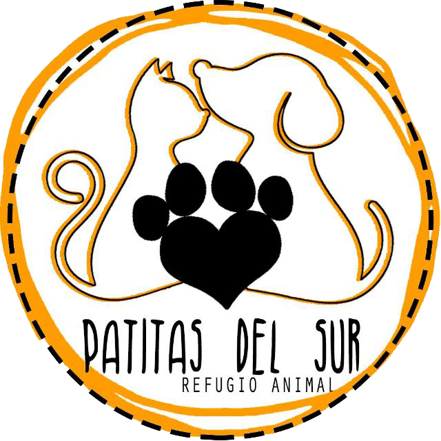

<nav class="navbar" [ngClass]="{'changeColor':changeColor}">
    <div class="org-name" [ngClass]="{'size':changeColor}"><a href="">Patitas del sur</a></div>
    <div class="navigation-list">
        <ul [ngClass]="{'ul-transform':changeColor}">
            <li><a [ngClass]="{'color-a':changeColor}" href="adopciones">Adopciones</a></li>
            <li><a [ngClass]="{'color-a':changeColor}" href="#historia">Nuestra historia</a></li>
            <li><a [ngClass]="{'color-a':changeColor}" href="#donar">Donaciones</a></li>          
            <li><a [ngClass]="{'color-a':changeColor}" href="#contact">Contactanos</a></li>
            <li><a [ngClass]="{'color-a':changeColor}" href="se-provi">Sé provi 🏡</a></li>
        </ul>
    </div>
</nav>
